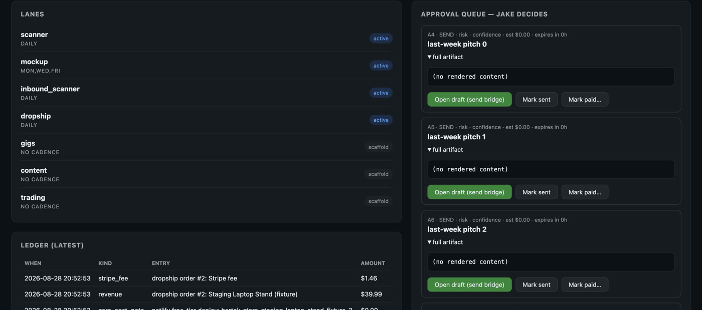
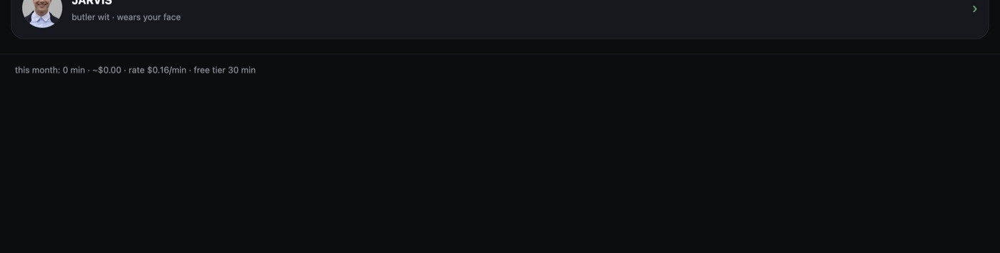
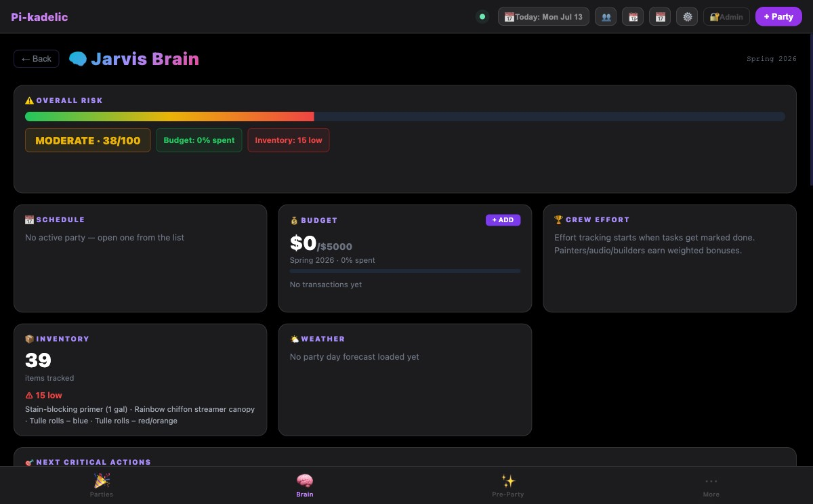
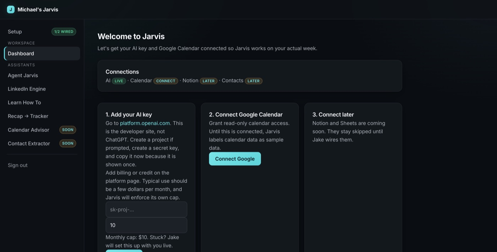

Every one of these runs in production for a real user, and most days that user is me.
Screenshots come from staging with fixture data wherever a live view would expose someone else's information.

Bartok
An earn-only autonomous agent. It scans for work, drafts pitches and deliverables, and queues each one for a signed SMS approval from me before anything sends. Sandboxed mission agents write manifests; a trusted orchestrator alone touches the database, secrets, and messaging. It never spends and never sends on its own, and that is enforced in the structure, not in a prompt.
Autonomous Agents · Python · SQLite · Twilio
Agent FaceTime
A mobile web portal where I video-call my own agents as avatars and hand them tasks mid-call. A spoken trigger dispatches the task, a runner claims it, and the result is spoken back into the conversation. Per-agent memory across calls, a token-gated bridge API, and per-minute billing on my own key.
Live on Netlify · Anam Avatars · Netlify FunctionsHorvitz Pipeline
Open-source ship pipeline that mechanically enforces every gate instead of trusting an agent to follow prose. Ten stages: kill-or-commit, a signed spec, a multi-model council review, an acceptance-verified build loop, adversarial review, staging with seeded data, a promote step that requires Touch ID on my Mac, and an operate-or-learn call after seven days. I used it to build version 2.0 of itself.
Open Source · Bash · Claude Code View on GitHub
JARVIS
A local, voice-first assistant that runs my calendar, mail, and notes, keeps a memory with full-text search, and spawns its own coding agents to build what I ask for. FastAPI, the Claude API, WebSockets, and a Three.js audio-reactive orb. Everything runs on my own machine.
Voice AI · FastAPI · Three.js View on GitHub
Pi-kadelic Brain
Event-operations platform for a 200-person fraternity. A 3D model of the house places the stage, lighting, and gear; live multi-user sync keeps everyone on the same plan; budget and inventory tracking sit next to an AI planner that writes the schedule and materials list. Used to plan events of up to 350 people.
3D Planning · Real-time Sync · LLM AgentsSongsheet
Song plus target instrument in, playable sheet music and tab out. It finds existing transcriptions, verifies the melody against the actual recording with chroma key-shift and tempo autocorrelation, and renders through my own ABC parser to LilyPond. A three-engine ensemble arbitrates pitch, octave, and rhythm so a bass part is never octave-folded.
Music AI · Audio Analysis · LilyPond
Michael's Jarvis
A hosted AI chief-of-staff for a media business-development executive: a LinkedIn drafting engine, a calendar advisor, meeting recap to tracker, and persistent memory, all behind one login. He brings his own API key, so the tool costs me nothing to run.
Client AI Product · Live on Fly.ioZero-Knowledge Client Intake
A fully encrypted intake system for an estate financial-planning program at Cheviot Value Management. Clients upload sensitive financial documents that stay unreadable without a password delivered by secure push notification, paired with an AI guide for managing finances after a death. No plaintext credentials anywhere in the system.
Privacy by Design · Encryption · AI GuideCampaign Analytics
The web app I built to run my Associated Students Senate campaign at UC Santa Barbara. It tracked website-visitor data to decide where to canvass and when to appear at clubs, sororities, and faith and music communities. I won 1 of 12 seats from a field of 50 candidates.
Analytics · Campaign Operations